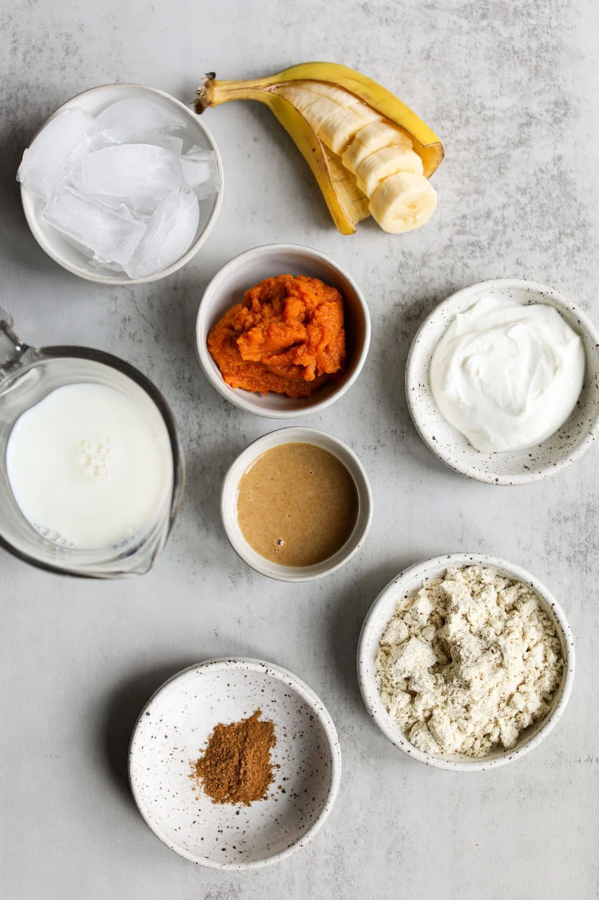

Ingredients
- ½ medium banana, frozen
- ½ cup dairy or non-dairy milk of choice
- ¼ cup canned pumpkin puree (not pumpkin pie filling)
- ¼ cup vanilla or plain Greek yogurt
- 1 scoop vanilla protein powder of choice (~ 30 g)
- 1 tablespoon + 2 teaspoons water
- ½ teaspoon pumpkin pie spice, plus more for garnish
- ½ cup ice
Directions
- Add all ingredients to a blender and blend until smooth.
- Pour into a glass and garnish with pumpkin seeds and additional pumpkin pie spice if desired.
- Serve immediately.